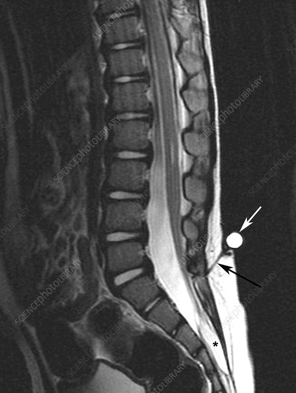

1) Description of Measurement
Spinal lipomas and dermal sinus tracts are distinct forms of occult spinal dysraphism with different embryologic origins, risks, and surgical implications. A spinal lipoma is a benign lesion composed of mature adipose tissue that may infiltrate or attach to neural elements, often causing cord tethering or mass effect. In contrast, a dermal sinus tract is an epithelium-lined channel extending from the skin surface into deeper spinal structures, formed by incomplete separation of cutaneous and neural ectoderm. Unlike lipomas, dermal sinus tracts pose a direct infectious risk due to communication between the skin and the spinal canal.
2) Instructions to Measure
3) Normal vs. Pathologic Ranges
4) Important References
Ackerman LL, Menezes AH. Spinal congenital dermal sinuses: a 30-year experience. Pediatrics. 2003 Sep;112(3 Pt 1):641-7. doi: 10.1542/peds.112.3.641. PMID: 12949296.
Tisdall MM, Hayward RD, Thompson DN. Congenital spinal dermal tract: how accurate is clinical and radiological evaluation? J Neurosurg Pediatr. 2015 Jun;15(6):651-6. doi: 10.3171/2014.11.PEDS14341. Epub 2015 Mar 13. PMID: 26030333.
5) Other info....
Dermal sinus tracts must be treated as potentially infected lesions, even when asymptomatic, due to the risk of meningitis, intramedullary abscess, or dermoid rupture.